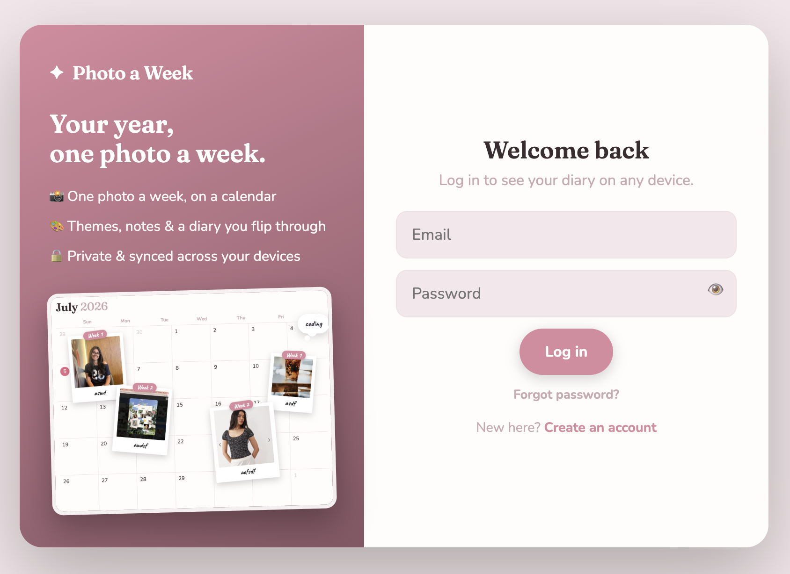

Live · Full-stack
Photo a Week
A scrapbook for your year: one photo a week onto a calendar, arranged like a real diary. Private, syncs across devices, installs to your home screen.
Built auth, a Postgres database, private file storage, and row-level security so each person only ever sees their own photos — plus revocable "view once" share links.
JavaScriptSupabase
PostgreSQLPWA